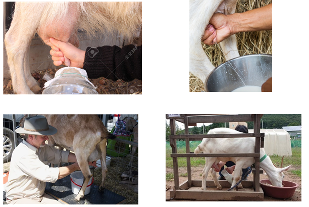

Goats generally practice natural nursing, so issues related to not feeding colostrum are rare. However, it is essential that newborn kids receive colostrum for at least the first week after birth.
Colostrum is the first milk secreted immediately after birth. It is rich in nutrients, containing 10 to 100 times more vitamin A than regular milk, and is packed with immune antibodies. It also helps stimulate the expulsion of meconium (first feces).
Newborn kids are not born with maternal antibodies, so they must absorb these antibodies through colostrum to develop immunity against various diseases.
However, since antibody concentration decreases quickly after birth, it is best to feed colostrum within the first hour.
If the mother goat dies during delivery or cannot feed colostrum for other reasons, colostrum from another recently kidding goat can be used. If that is not available, a colostrum substitute can be made by mixing:
- 500 mL of milk
- Half a tablespoon of castor oil
- 1 egg white
Feed 20–30 mL per dose, 3 times a day for 3–4 days as a substitute.
Goats begin producing milk immediately after giving birth. However, during the first 1–2 weeks, you should not milk the goat, as the colostrum is needed for the kid.
After 2 weeks, goats can be milked twice a day (morning and evening) for approximately 9–10 months. It is recommended that all goats complete their lactation period at least 2 months before the next mating.
Goats can be milked by hand or using a milking machine (costing around $200–$700). In both cases, hygiene is critical:
Inexperienced farmers may stress the goat to speed up milking, but it is better to keep the goat calm by offering tasty feed.
After milking: - Clean the teats again using water and soap or a special sanitizing solution. - It is common to dip the teats in an antibacterial solution, but boiled water is also effective for sanitization.

When using a milking machine, it is essential to thoroughly clean all parts of the equipment with appropriate cleaning agents before and after milking.
Most portable milking machines consist of: - A milking claw - A pump - A milk bucket or container
Even when using a machine, it is important to start and finish milking by hand for several reasons: - To check the condition of the milk, especially for traces of blood. - To ensure proper stimulation and complete emptying of the udder.
When the machine is powered on, milk is drawn through the claw under vacuum pressure, then flows through the tubing and finally into the collection bucket.
After milking: - Remove the unit carefully. - Clean the teats with a disinfectant solution, just as you would during hand milking.
⚠️ Note:
Goats often become dehydrated after milking. Therefore, it is important to provide fresh water and hay immediately after milking.
Typically, milk should be stored in a refrigerator right after milking. Alternatively, it can be pasteurized at a low temperature and then cooled for safe storage and use.